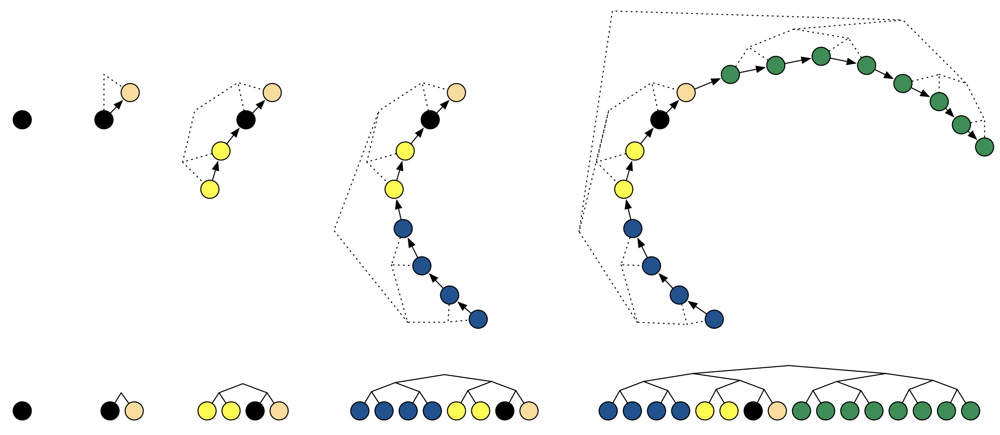
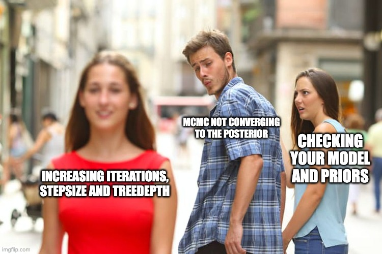

![]()
{kind=link}
{kind=link}
{kind=link}
# Log-posterior function
log_posterior <- function(q, Sigma, mu) {
diff <- q - mu
-0.5 * t(diff) %*% solve(Sigma) %*% diff - 0.5 * log(det(Sigma))
}
## Gradient of Log-posterior
grad_log_posterior <- function(q, Sigma, mu) {
-solve(Sigma, q - mu)
}Introduction
Remember MCMC from our series on these algorithms? Good times. We wandered through probability space like tourists with outdated maps, occasionally stumbling upon the good parts of the posterior. Then came Hamiltonian Monte Carlo (HMC), which, let’s be honest, felt like finally getting a GPS. We could actually explore the posterior, using gradients to guide our journey. It was efficient! It was elegant! It was… still kind of a pain in the neck.
Check our first post on MCMC principles and use cases before diving into this post, if you haven’t done it already.
Why Your HMC Was Probably Just Running in Circles
See, HMC, for all its brilliance, has this one little quirk: it needs to be told how far to travel in each step. It’s like having a GPS that only understands instructions in increments of “exactly 5 kilometers”. Want to go 4.8 km? Too bad. Want to go 5.2 km? Tough luck. This “step size” parameter is crucial. Too small, and you’re just shuffling around like a confused shopper in a supermarket, making painfully slow progress. Too large, and you’re overshooting your target, bouncing around like a pinball, and generally wasting everyone’s time (especially your computer’s).
Check our second post on MCMC, more specifically on HMC, to get a better intuition of what this algorithm is doing.
Typical HMC running in circles around the posterior. Photo from Redleg Nation.
This manual tuning of the step size is about as fun as watching paint dry. You fiddle with it, run your sampler, check the results, fiddle some more, run it again… It’s an iterative process that makes you question your life choices. You start to wonder if there’s a better way. A way to tell the sampler, “Hey, just go where you need to go, okay?”
Enter the No-U-Turn Sampler (NUTS). Yes, it’s a ridiculous name. But it’s also a brilliant solution. NUTS is like giving your HMC GPS a brain. It dynamically figures out how far to travel in each step, adapting to the local geometry of the posterior. No more tedious manual tuning! No more endless tweaking! NUTS takes the wheel and drives you straight to the heart of the posterior distribution, efficiently exploring even the most complex landscapes.
In this post, we’re going to dive deep into the inner workings of NUTS. We’ll explore how it cleverly avoids those wasteful U-turns (hence the name), how it builds efficient trajectories, and how you can implement it yourself in R. By the end, you’ll be able to unleash the power of adaptive Hamiltonian sampling on your own Bayesian models, and finally say goodbye to the tyranny of fixed step sizes. You’ll learn how to transform your sampling from a tedious chore into a smooth, efficient, and (dare I say) even enjoyable experience. So buckle up, because we’re about to go NUTS!
When Your Posterior Looks Like a Jackson Pollock Painting
So, we know HMC with fixed step sizes can be a bit… finicky. But why should we care? Are there actual problems where this matters? You bet your Bayesian priors there are! Imagine you’re trying to model something complex, like the spread of a disease, the performance of a stock portfolio, or the migratory patterns of extremely confused pigeons. These kinds of problems often lead to posterior distributions that are… well, let’s just say they’re not always nice, well-behaved Gaussians.
Sometimes, your posterior might have multiple peaks (multimodal), like a mountain range with several summits. Traditional MCMC methods, like Metropolis-Hastings or Gibbs sampling, can get stuck in one peak, completely missing the others. It’s like trying to find all the best restaurants in a city by only exploring one neighborhood. You might find a decent burger joint, but you’ll miss out on the amazing sushi place across town.
Code
my_surface <- function(m, p) {
alpha = 0.7
ext = pi
2 + alpha - 2 * cos(m) * cos(p) - alpha * cos(ext - 2 * p)
}
x <- y <- seq(from = -1.5*pi, to = 1.5*pi, length.out = 100)
z <- outer(x, y, my_surface)
par(mai = c(0,0,0,0),
mar = c(0,1,0,0),
oma = c(0,0,0,0))
persp(x = x, y = y, z = z,
theta = 40, phi = 20, col = "lightblue",
expand = 1/3)
Fixed-step HMC fares a little better, thanks to its gradient-based exploration. But even it can struggle. Imagine trying to navigate that same mountain range with a vehicle that can only move in fixed increments. If the step size is too large, you might overshoot the peaks and bounce around erratically. If it’s too small, you’ll take forever to explore the terrain. And if the terrain is particularly treacherous, say, with narrow valleys and steep cliffs, you might get stuck altogether.
A particularly illustrative example is a posterior with a “banana-shaped” density. This isn’t some exotic fruit we’re talking about; it’s a type of distribution that curves like a banana. These curved, elongated shapes are common in hierarchical models and other complex statistical models. They present a challenge for fixed-step HMC because the optimal step size varies drastically across the distribution. A small step size might be necessary in the curved part of the “banana”, while a much larger step size would be more efficient in the straighter parts.
To make this concrete, let’s consider a simple bivariate Gaussian distribution with a banana-shaped density. We can define this as follows:
\[ \begin{aligned} x &\sim \mathcal{N}(0, 1) \\ y &\sim \mathcal{N}(x^2, 0.1) \end{aligned} \]
This creates a posterior where \(y\) is dependent on \(x^2\), resulting in the characteristic banana shape.
Code
xy_seq <- seq(-4.5, 4.5, .01)
df <- expand.grid(x = xy_seq, y = xy_seq)
df$z <- with(df, {
x_square <- (x^2)
yx_square <- ((y - x_square)^2) / .1
exp(-0.5 * x_square - 0.5 * yx_square)
})
ggplot(df, aes(x, -y, z = z)) +
geom_raster(aes(fill = z), show.legend = FALSE) +
geom_contour(bins = 8, show.legend = FALSE, alpha = .1, col = "#206080") +
scale_y_continuous(limits = c(-4.5,1), expand = c(0,0),
oob = scales::squish_infinite) +
scale_x_continuous(limits = c(-2.5,2.5), expand = c(0,0),
oob = scales::squish_infinite) +
scale_fill_gradient(low = "white", high = "#B7CCDC") +
theme_void()As you can see, this posterior is far from a simple, spherical Gaussian. Trying to efficiently sample from this distribution with a fixed step size is like trying to fit a square peg in a round hole (or, in this case, a banana-shaped hole).
How to Not Get Lost in Probability Space
Now that we understand why fixed-step HMC can struggle, let’s dig into the magic behind NUTS. The core idea is to let the sampler decide how far to travel in each step, adapting to the local geometry of the posterior. This involves two key components: (1) adaptive path length and (2) the U-turn criterion.
Adaptive Path Length
In fixed-step HMC, you predefine a fixed number of leapfrog steps. This determines the length of the trajectory. But what if the optimal trajectory length varies across the posterior? What if sometimes you need to take a short stroll and other times a long hike?
Foot steps in representation of the concept of “stepsize”. Photo from magnezis magnestic in Unsplash.
NUTS solves this by dynamically adjusting the trajectory length. It starts with a short trajectory (e.g., just one leapfrog step) and then doubles it repeatedly. This doubling process continues until a certain criterion is met (which we’ll get to in the next subsection).
Why doubling? Because it’s efficient! It allows NUTS to quickly explore a wide range of trajectory lengths without having to try every single possible length. It’s like searching for a light switch in a dark room: you start by checking nearby, then you check a wider area, and so on, doubling your search radius until you find it.
Now, let’s consider a 2D example. Remember our banana-shaped posterior? With HMC-NUTS, we start with a single leapfrog step in a random direction. Then, we double the trajectory length by taking two steps, then four, and so on. The trajectory starts to resemble a branching path, exploring the posterior in ever-widening arcs.
Let’s now see an interactive animation of the NUTS dynamics in action over our banana-shaped distribution.
The code for this animation is borrowed from Chi Feng’s github. You can find the original repository with corresponding code here: https://github.com/chi-feng/mcmc-demo.
This dynamic doubling of the trajectory length is a crucial part of NUTS’s efficiency. It allows the sampler to quickly adapt to the local geometry of the posterior, taking long steps when appropriate and short steps when necessary. But how does NUTS know when to stop doubling? That’s where the U-turn criterion comes in, which we’ll explore in the next section.
The U-Turn Criterion
So, we’re doubling the trajectory length, exploring the posterior like eager adventurers. But how do we know when to stop? We don’t want to keep doubling indefinitely, wasting computational resources and potentially revisiting already explored regions. This is where the U-turn criterion comes in.
The basic idea is simple: if our trajectory starts to double back on itself, making a “U-turn”, it’s a good sign that we’ve explored the relevant part of the posterior in that direction. Continuing further would just be redundant. It’s like hiking up a mountain: once you reach the summit and start heading down the other side, you know you’ve gone far enough in that direction. No need to keep walking just for the sake of it (unless you’re really into hiking, I guess).
Photo from Ricardo Salinas’ site.
Mathematically, a U-turn is detected by looking at the dot product of the momentum vectors at the beginning and end of the trajectory. Remember, the momentum vector indicates the direction of travel. If the dot product is negative, it means the two momentum vectors are pointing in roughly opposite directions, a clear sign of a U-turn.
Let’s break this down with a small example. Imagine we’re sampling from a 2D Gaussian. We start at a point \(q_0\) with momentum \(p_0\). We take a few leapfrog steps and end up at a point \(q_T\) with momentum \(p_T\).
- If \(p_0 \cdot p_T > 0\), the momentum vectors are pointing in roughly the same direction. No U-turn yet. Keep exploring!
- If \(p_0 \cdot p_T < 0\), the momentum vectors are pointing in roughly opposite directions. We’ve made a U-turn! Time to stop doubling the trajectory in this direction.
Code
q0 <- c(1, 1)
p0 <- c(-1, 1)
epsilon <- 0.1
steps <- 60
Sigma <- diag(1,2)
xy_seq <- seq(-3, 3, by = .1)
dens_df <- expand.grid(x = xy_seq, y = xy_seq)
dens_df$z <- mvtnorm::dmvnorm(dens_df, c(0,0), Sigma)
positions <- matrix(0, nrow = steps, ncol = length(q0))
positions[1, ] <- q0
## Simplified leapfrog steps
q <- q0; p <- p0
for (i in 2:steps) {
p_half <- p + (epsilon / 2) * (-q) # Half-step for momentum
q <- q + epsilon * p_half # Full-step for position
p <- p_half + (epsilon / 2) * (-q) # Second half-step for momentum
positions[i, ] <- q
}
# Check U-Turn
uturn_check <- apply(positions, 1, function(qp) {
sum((qp - q0) * p0) < 0
})
plot_data <- data.table(x = positions[, 1],
y = positions[, 2],
is_uturn = uturn_check)
ggplot(plot_data, aes(x = x, y = y)) +
geom_contour(data = dens_df, aes(x, y, z = z), col = "gray",
linetype = 2) +
geom_point(aes(color = is_uturn), size = 3) +
geom_path(aes(color = is_uturn, group = 1)) +
annotate(geom = "segment",
x = q0[1], y = q0[2],
xend = q0[1] + p0[1], yend = q0[2] + p0[2],
arrow = arrow(length = unit(1/3, "cm"), type = "closed"),
lwd = 1, linejoin = "mitre") +
labs(title = "U-Turn Check",
x = expression(q[1]),
y = expression(q[2])) +
scale_color_manual(values = c("#008080", "#990050"),
labels = c("No U-Turn", "U-Turn"),
name = "U-Turn State")This U-turn criterion is a clever way to prevent NUTS from over-exploring. It ensures that the sampler focuses its efforts on the relevant regions of the posterior, leading to more efficient sampling. Now that we know how NUTS adapts the trajectory length and when to stop, let’s see how it organizes these trajectories into a neat and efficient structure: the binary tree.
Tree Building for Sampling
We now know how NUTS dynamically adjusts the trajectory length and how it uses the U-turn criterion to avoid redundant sampling. But how does it keep track of all these different trajectories? The answer is: with a binary tree!
Imagine you’re exploring a maze. You start at the entrance, and at each intersection, you have two choices: go left or go right. You keep making choices until you reach a dead end or decide to turn back. This is essentially how NUTS builds its binary tree.
Picture of a Maze, representing that each choice (either left or right) is an example of binary decision, which represents the binary tree building process. Photo from Adobe Stock.
NUTS starts with a single leapfrog step (our initial trajectory). This is the root of our tree. Then, it doubles the trajectory length by taking two steps: one to the “left” and one to the “right”. These two trajectories become the children of the root node. This doubling process continues, creating a balanced binary tree.
Why a tree? Because it’s an efficient way to organize the exploration. It allows NUTS to quickly explore different parts of the posterior without having to revisit already explored regions (thanks to the U-turn criterion).
Let’s break down the tree-building process:
- Start with a single leapfrog step: This is the root node of the tree.
- Double the trajectory length: Create two new trajectories by extending the current trajectory in both directions (forward and backward in time). These are the left and right children of the current node.
- Check for U-turns: Use the U-turn criterion to determine if either of the new trajectories has made a U-turn. If so, stop extending that branch of the tree.
- Repeat steps 2 and 3: Continue doubling the trajectory length and checking for U-turns until a certain stopping criterion is met (e.g., a maximum tree depth).

Binary tree building process. Photo from J. Mach. Learn. Res., 15(1), 1593-1623.
Now, how does NUTS use this tree for sampling? It uses a process called recursive sampling. It starts at the root node and recursively traverses the tree, choosing either the left or right child at each node. The choice is made probabilistically, based on the Metropolis-Hastings acceptance criterion. This ensures that the samples are drawn from the target posterior distribution.
This tree-building and recursive sampling process is what makes NUTS so efficient. It allows it to explore the posterior in a structured and organized way, avoiding redundant sampling and quickly adapting to the local geometry.
Step-by-Step Implementation of NUTS
Now that we understand the theory behind NUTS, it’s time to put our knowledge into practice. In this section, we’ll build a NUTS sampler from scratch in R. Don’t worry, we’ll take it one step at a time (or, should I say, one leapfrog step at a time?).
Setting Things Up
Before we start building our NUTS engine, we need to gather our tools. This involves defining (1) our target distribution, (2) its gradient, and (3) the leapfrog integration method. We’ll reuse the gradient and leapfrog functions from our previous HMC implementation (because why reinvent the wheel?).
Let’s consider a simple 2D Gaussian distribution as our target posterior. This will make it easier to visualize and understand the behavior of NUTS. We can define the log-posterior as follows:
\[ \log p(q) = -\frac{1}{2}q^\top \Sigma^{-1} q -\frac{1}{2}\log(\det{\Sigma}) + \text{constant} \]
Where \(q = (q_1, q_2)\) is our position vector and \(\Sigma\) is the covariance matrix.
Now, let’s define the gradient of the log-posterior:
\[ \nabla \log p(q) = -\Sigma^{-1} q \]
Here’s the R code for the log-posterior and its gradient:
Next, we need the leapfrog integration function. Here’s a reminder (and the R code) from the previous HMC blog post:
# Leapfrog integration
leapfrog <- function(q, p, grad_func, epsilon, Sigma, mu) {
grad_q <- grad_func(q, Sigma, mu) # Gradient calculation
p <- p + (epsilon / 2) * grad_q # Half-step for momentum
q <- q + epsilon * p # Full-step for position
grad_q <- grad_func(q, Sigma, mu)
p <- p + (epsilon / 2) * grad_q # Half-step for momentum
list(q = q, p = p)
}With these functions in place, we’re ready to start implementing the core components of NUTS. We’ll begin with the initialization step in the next subsection.
Okay, let’s dive into the core steps of NUTS implementation. This will be the most substantial part of the implementation section.
Core Steps of NUTS
Now that we have our tools ready, we can start building the core components of the NUTS sampler. This involves initialization, building the trajectory, checking for U-turns, building the tree, and handling acceptance and termination.
Initialization
First, we need to initialize the sampler. This involves setting the initial position \(q\), drawing a random momentum \(p\), and setting the hyperparameters, most importantly, the initial step size \(\epsilon\).
# Initialization
nuts_init <- function(q0, Sigma, mu, epsilon) {
list(
q = q0, # Initial position
mu = mu,
p = rnorm(length(q0), 0, 1), # Initial random momentum
epsilon = epsilon # Initial step size (this will be adapted later)
)
}
# Example initialization
q0 <- c(0, 0) # Starting position
mu <- c(-1,1) # Target location
epsilon = 0.1 # Step size
nuts_state <- nuts_init(q0, Sigma, mu, epsilon)Build the Trajectory
The next step is to build the trajectory using the leapfrog integrator. Here’s where the dynamic doubling comes in. We’ll also incorporate the U-turn check here.
Code
# U-turn check (dot product of momentum vectors)
is_uturn <- function(q_left, q_right, p_left, p_right) {
(sum((q_right - q_left) * p_left) < 0) ||
(sum((q_right - q_left) * p_right) < 0)
}
# Build a trajectory (doubling until U-turn)
build_trajectory <- function(q, p, grad_func, epsilon, Sigma, mu) {
q_left <- q
p_left <- p
q_right <- q
p_right <- p
trajectory <- list(q = q, p = p)
j <- 0
while (!is_uturn(q_left, q_right, p_left, p_right) && j < 10) {
if (runif(1) < 0.5) {
# Expand left
leapfrog_result <- leapfrog(q_left, p_left, grad_func, -epsilon, Sigma, mu)
q_left <- leapfrog_result$q
p_left <- leapfrog_result$p
} else {
# Expand right
leapfrog_result <- leapfrog(q_right, p_right, grad_func, epsilon, Sigma, mu)
q_right <- leapfrog_result$q
p_right <- leapfrog_result$p
}
trajectory$q <- cbind(trajectory$q, leapfrog_result$q)
trajectory$p <- cbind(trajectory$p, leapfrog_result$p)
j <- j + 1
}
index <- sample(1:ncol(trajectory$q), 1)
list(q = trajectory$q[, index], p = trajectory$p[, index])
}Tree Building
While the previous function builds the trajectory by doubling it, the actual tree structure is implicit. This is because NUTS doesn’t explicitly store the entire tree in memory. It only needs to keep track of the leftmost and rightmost points of the trajectory and use them to sample.
Code
nsteps <- 1000
positions <- matrix(NA, nrow = nsteps, ncol = 2)
xy_seq <- seq(-.5, 3, by = .1)
dens_df <- expand.grid(x = xy_seq, y = xy_seq)
dens_df$z <- mvtnorm::dmvnorm(dens_df, c(0,0), diag(1,2))
set.seed(42)
for (i in seq_len(nsteps)) {
positions[i,] <- build_trajectory(
q = c(1, 1),
p = c(-1, 1),
grad_func = grad_log_posterior,
epsilon = 0.1,
Sigma = diag(1,2),
mu = c(0,0)
)$q
}
positions <- unique(positions) |>
data.table::as.data.table()
positions[V1 > 1, side := "Right"]
positions[V1 < 1, side := "Left"]
positions[V1 == 1, side := "Initial Position"]
ggplot(positions, aes(x = V1, y = V2)) +
geom_contour(data = dens_df, aes(x, y, z = z), col = "gray",
linetype = 2) +
geom_line(linewidth = 1) +
geom_line(aes(col = side), linewidth = 1) +
geom_point(aes(col = side), size = 3) +
labs(title = "Binary Tree Trajectory Visualization",
x = expression(q[1]), y = expression(q[2]),
col = "Tree Side") +
scale_color_manual(values = c(rgb(0,0.5,0.5,1),
rgb(0.5,0,0.5,1),
rgb(0.2,0.2,0.2,1)),
breaks = c("Left", "Right")) +
annotate(geom = "text",
x = positions[side=="Left"][order(V2), V1],
y = positions[side=="Left"][order(V2), V2] + .1,
label = 1:8, col = rgb(0,0.3,0.3,1)) +
annotate(geom = "text",
x = positions[side=="Right"][order(V1), V1] + .05,
y = positions[side=="Right"][order(V1), V2],
label = 1:8, col = rgb(0.3,0,0.3,1)) +
scale_x_continuous(expand = c(0,0)) +
scale_y_continuous(expand = c(0,0)){kind=link}
Acceptance and Termination
Finally, we need to decide whether to accept the new sample from the trajectory. This is done using the Metropolis-Hastings acceptance criterion, comparing the joint probability of the initial state and the proposed state. The process is repeated until the desired number of samples is obtained.
# Metropolis-Hastings acceptance probability
acceptance_prob <- function(current_logp, proposed_logp) {
min(1, exp(proposed_logp - current_logp))
}We will incorporate this acceptance step into the full NUTS sampler in the next section, along with the complete NUTS algorithm and the adaptive step size procedure.
Adaptative Step-Size
One of the most crucial aspects of NUTS (and HMC in general) is choosing an appropriate step size, \(\epsilon\). A good step size allows the sampler to efficiently explore the posterior distribution. Too small, and the sampler takes tiny, slow steps, like a snail on a marathon. Too large, and it overshoots, bouncing around erratically, like a caffeinated kangaroo on a trampoline.
NUTS uses an adaptive step size procedure, especially during the warmup phase, to find a good value for \(\epsilon\). The goal is to achieve a target acceptance rate, typically around 0.8. This indicates that the sampler is neither accepting too many nor too few proposals.
A simple way to adapt the step size is to use the following update rule:
\[ \epsilon \leftarrow \epsilon \cdot e^{\gamma \cdot \delta} \\ \]
Where \(\epsilon\) is the current step size; \(\gamma\) is a tuning parameter that controls the adaptation rate (how fast \(\epsilon\) will adapt); \(\delta\) is the difference between the current acceptance rate \(\lambda_{\text{CA}}\) and the target acceptance rate \(\lambda_{\text{TA}}\), and could be defined like this:
\[ \delta = \lambda_{\text{CA}} - \lambda_{\text{TA}} \]
This simplified form allow us to reduce epsilon at each step as long as the current acceptance rate \(\lambda_{\text{CA}}\) is lower than the target acceptance rate \(\lambda_{\text{TA}}\). Here’s the R code for this adaptation:
adapt_epsilon <- function(epsilon, lambda_ca, lambda_ta = 0.8, gamma = 0.5) {
delta <- lambda_ca - lambda_ta
epsilon <- epsilon * exp(gamma * delta)
epsilon
}This update rule adjusts the step size based on the difference between the observed and target acceptance rates. If the acceptance rate is too low, (\(\epsilon\)) is decreased; if it’s too high, (\(\epsilon\)) is increased. The gamma (\(\gamma\)) parameter controls how aggressively this adjustment is made.
To see how this adaptation works in practice, let’s visualize its dynamics:
Code
epsilons <- numeric(50)
accept_rates <- seq(0, 0.9, length.out = 50)
epsilons[1] <- 1.0
gammas <- seq(0, 0.30, by = 0.025)
plot_data <- list()
for (i in seq_along(gammas)) {
for (j in 2:length(epsilons)) {
epsilons[j] <- adapt_epsilon(
epsilon = epsilons[j - 1],
lambda_ca = accept_rates[j],
lambda_ta = 0.8,
gamma = gammas[i])
}
plot_data[[i]] <- data.table::data.table(
iteration = 1:50,
epsilon = epsilons,
gamma = gammas[i],
accept_rate = accept_rates
)
}
plot_data <- data.table::rbindlist(plot_data)
ggplot(plot_data, aes(x = iteration, y = epsilon, col = gamma, group = gamma)) +
geom_line(aes(linewidth = accept_rate, alpha = accept_rate)) +
labs(title = "Step-Size Adaptation", x = "Iteration",
y = "Epsilon", col = expression("Adaptation Rate ("*gamma*")")) +
geom_hline(yintercept = 1, linewidth = 1/2, color = "gray50", linetype = 2) +
scale_alpha_continuous(range = c(0.3,1), name = "Acceptance Rate",
labels = scales::label_percent(),
limits = c(0, .9),
breaks = c(0, .3, .6, .9)) +
scale_linewidth_continuous(range = c(0.1, 1.5),
name = NULL, labels = NULL, breaks = NULL) +
scale_x_continuous(expand = c(0,0)) +
scale_color_viridis_c(limits = c(0, .31)){kind=link}
As the plot shows, the adaptation is more aggressive (epsilon changes more rapidly) with larger values of \(\gamma\). Note that this is a very basic adaptation strategy. More robust methods, such as dual averaging, are typically used in practice, but this simple method illustrates the basic idea.
Implementation Strategy
Now that we have all the individual components, it’s time to assemble them into a fully functional NUTS sampler. We’ll also incorporate the adaptive step size tuning, which is crucial for NUTS’s performance.
# Full NUTS sampler
nuts <- function(log_posterior, grad_log_posterior,
q0, Sigma, mu,
epsilon, lambda_ta, gamma,
n_samples = 1000, n_warmup = 500) {
# Initialization
nuts_state <- nuts_init(q0, Sigma, mu, epsilon)
samples <- matrix(0, nrow = n_samples + n_warmup, ncol = length(q0))
# Warmup phase for step size adaptation
for (i in 1:n_warmup) {
nuts_state$p <- rnorm(length(q0), 0, 1) # Resample momentum
trajectory <- build_trajectory(nuts_state$q, nuts_state$p, grad_log_posterior, nuts_state$epsilon, Sigma, mu)
#Metropolis Hastings
current_logp <- log_posterior(nuts_state$q, Sigma, mu)
proposed_logp <- log_posterior(trajectory$q, Sigma, mu)
acc_rate <- acceptance_prob(current_logp, proposed_logp)
if(runif(1) < acc_rate){
nuts_state$q <- trajectory$q
}
## Adaptative epsilon
nuts_state$epsilon <- adapt_epsilon(epsilon, acc_rate, lambda_ta, gamma)
samples[i, ] <- nuts_state$q
}
# Sampling phase
for (i in 1:n_samples) {
nuts_state$p <- rnorm(length(q0), 0, 1) # Resample momentum
trajectory <- build_trajectory(nuts_state$q, nuts_state$p, grad_log_posterior, nuts_state$epsilon, Sigma, mu)
#Metropolis Hastings
current_logp <- log_posterior(nuts_state$q, Sigma, mu)
proposed_logp <- log_posterior(trajectory$q, Sigma, mu)
if(runif(1) < acceptance_prob(current_logp, proposed_logp)){
nuts_state$q <- trajectory$q
}
samples[i + n_warmup, ] <- nuts_state$q
}
samples
}Here’s a breakdown of the full nuts function:
- Initialization: We initialize the NUTS state using the
nuts_init()function. - Warmup: The first
n_warmupiterations are used for tuning the step size. A very basic adaptation is implemented, increasing the step size in the first half of the warmup and decreasing it in the second half. More sophisticated methods exist (like dual averaging). - Sampling: The main sampling loop runs for
n_samplesiterations. In each iteration:- We build a trajectory using
build_trajectory(). - We perform the Metropolis Hastings step, to accept or reject the new proposed sample
- We store the current position in the
samplesmatrix.
- We build a trajectory using
This implementation provides a basic but functional NUTS sampler. In the next section, we’ll discuss diagnostics and validation to ensure our sampler is working correctly.
Is Our Sampler Behaving Itself?
In the following section, we’ll try to estimate the location parameters of a 2-dimensional multivariate normal, we’ll call them \(\theta_1\) and \(\theta_2\) respectively. They will have a true values of \(\theta_1 = 1\) and \(\theta_2 = -1\), and the variance-covariance matrix (\(\Sigma\)) will be defined as:
\[ \Sigma = \begin{pmatrix} 1.0 & 0.5 \\ 0.5 & 1.0 \end{pmatrix} \]
## Initial parameters
q0 <- c(0, 0) # Starting positions
mu <- c(1, -1) # Target location of the distribution
epsilon <- 0.5 # (Initial) Step size for HMC exploring
lambda_ta <- .75 # Target acceptance rate
gamma <- 0.5 # Adaptation rate for epsilon
# Variance-Covariance Matrix
Sigma <- matrix(
data = c(1, 0.5,
0.5, 1),
nrow = 2
)
set.seed(1234) # Seed for reproducibility
# Our main function , HMC-NUTS sampler
samples <- nuts(
log_posterior, grad_log_posterior, # Distribution functions
q0, Sigma, mu, # Target parameters
epsilon, lambda_ta, gamma,
n_samples = 2000, n_warmup = 2000 # Sampler hyperparameter
)Now that we have a working NUTS sampler, we need to make sure it’s actually doing what it’s supposed to do. This section will cover several diagnostic techniques, both visual and numerical, to validate our sampler.
Visual Diagnostics
The first step in diagnosing our sampler is to visualize the results. This gives us a quick and intuitive understanding of its behavior. Two common visual diagnostics are trace plots and posterior density estimates.
Trace Plots
Trace plots show the value of each parameter over the course of the sampling process. Ideally, trace plots should look like “white noise” (random fluctuations around a stable mean). This indicates that the sampler is exploring the posterior well and not getting stuck in any particular region. If you see trends, patterns, or long periods of near-constant values, it could indicate problems with convergence.
Code
plot_df <- as.data.table(samples)
plot_df[, iter := seq_len(.N)]
plot_df <- melt(plot_df, id.vars = "iter")
ggplot(plot_df, aes(iter, value, col = variable)) +
annotate(geom = "ribbon", alpha = 1/5,
x = c(0, 2000), ymin = -Inf, ymax = Inf) +
annotate(geom = "text", x = 1950, y = -4,
label = "\"Burn-in\" Period", hjust = 1) +
geom_line(linewidth = 1/2) +
geom_hline(yintercept = c(-1,1), linetype = 2) +
labs(color = "Parameter", y = expression(theta), x = "Iterations",
title = "Traceplot of Parameter Values",
subtitle = "Over Effective and Burn-in Samples") +
scale_color_manual(values = c(rgb(0,.5,.5,1),rgb(.5,0,.5,1)),
labels = c("theta[1]", "theta[2]") |>
scales::label_parse()()) +
scale_y_continuous(expand = c(0.1,0)) +
scale_x_continuous(expand = c(0,0)){kind=link}
Posterior Density Estimates
These plots show the estimated density of the samples, giving us an idea of the shape of the posterior distribution. We can compare these estimates to the true posterior distribution (if we know it) to check if our sampler is capturing the correct shape.
Code
#True density
xy_seq <- seq(-4, 4, by = .1)
dens_df <- expand.grid(x = xy_seq, y = xy_seq)
dens_df$z <- mvtnorm::dmvnorm(dens_df, mu, Sigma)
ggplot(data = data.frame(samples), aes(x = X1, X2))+
geom_contour(data = dens_df, aes(x, y, z = z),
col = "gray40", linetype = 2) +
geom_path(alpha = .2, col = "gray") +
geom_point(col = rgb(0,0.5,0.5,1), alpha = 1/5, pch = 16) +
labs(x = expression(theta[2]), y = expression(theta[1]),
title = expression("Joint Posterior Distribution of"~theta)){kind=link}
By visually inspecting these plots, we can get a good sense of whether our NUTS sampler is working as expected. However, visual diagnostics are subjective. We also need numerical diagnostics to provide more objective measures of sampler performance.
Numerical Diagnostics
While visual diagnostics provide a valuable qualitative assessment of our sampler’s performance, we also need quantitative metrics to be more objective. Two key numerical diagnostics are effective sample size (ESS) and R-hat (\(\hat{R}\)).
Effective Sample Size (ESS)
The ESS measures the number of independent samples that our sampler has effectively generated. Because MCMC samples are correlated, the ESS is typically smaller than the actual number of samples. A higher ESS indicates better sampler efficiency. A rule of thumb is that you want an ESS of at least a few hundred for each parameter to have reliable estimates of the posterior.
We can estimate the ESS using various methods. A common approach is to use the effectiveSize() function from the coda package in R:
# Calculate ESS for each parameter
coda::mcmc(samples, start = 2000 + 1) |>
coda::effectiveSize() var1 var2
511.6659 508.3677 Gelman and Rubin’s Convergence Diagnostic (\(\hat{R}\))
The \(\hat{R}\) statistic (pronounced “R-hat”) is a convergence diagnostic that compares the variance within multiple chains to the variance between chains. If the chains have converged to the same distribution, the within-chain variance should be similar to the between-chain variance, and \(\hat{R}\) should be close to 1. Values of \(\hat{R}\) much greater than 1 (e.g., above 1.1) indicate that the chains have not converged.
However, to compute \(\hat{R}\) we need more than one chain, so let’s run our HMC-NUTS model four times to get independent runs or “chains”:
n_chains <- 4 # Number of independent chains
set.seed(1234) # Seed for reproducibility
# Our main function within a lapply() statement for looping
nuts_model <- lapply(seq_len(n_chains), function(x) {
samples <- nuts(
log_posterior, grad_log_posterior,
q0, Sigma, mu,
epsilon, lambda_ta, gamma,
n_samples = 2000, n_warmup = 2000
)
`dimnames<-`(samples, list(NULL, c("theta_1", "theta_2")))
})We can now calculate \(\hat{R}\) using the gelman.diag() function from the coda package:
# Calculate R-hat
nuts_model |>
lapply(coda::mcmc, start = 2e3 + 1) |>
coda::mcmc.list() |>
coda::gelman.diag() |>
lapply(round,3)$psrf
Point est. Upper C.I.
theta_1 1.003 1.009
theta_2 1.001 1.003
$mpsrf
[1] 1.004As you can see, all \(\hat{R}\) are well below the 1.1 threshold, which suggests that the chains are mixing well enough.
With these visual and numerical diagnostics, we can be confident about the performance of our NUTS sampler. These tools allow us to assess convergence, efficiency, and overall sampler behavior, ensuring that we are obtaining reliable samples from our target posterior distribution.
Making It Sing in the Real World
Now that we have a basic NUTS sampler, let’s talk about how to fine-tune it for real-world applications. Because, let’s face it, toy examples are fun, but real-world problems are where the real challenges (and rewards) lie.
When applying NUTS to real-world problems, there are a few practical considerations to keep in mind: (1) choosing an initial step size, (2) setting the maximum tree depth, and (3) understanding the computational trade-offs.
Choosing an Initial Step Size
While NUTS adapts the step size during warmup, a good initial step size can significantly improve the efficiency of the adaptation process. A common approach is to perform a short pilot run (a few hundred iterations) and adjust the initial step size based on the acceptance rate. If the acceptance rate is too low (e.g., below 0.6), decrease the initial step size. If it’s too high (e.g., above 0.9), increase it.
In our implementation, we used a very simple adaptation strategy. In real-world applications, more robust methods like dual averaging are used. These methods are more stable and efficient at finding a good step size.
Always be careful on the stepsize you choose! Photo from Coach The Run.
Setting the Maximum Tree Depth
The maximum tree depth limits the maximum trajectory length that NUTS will explore. A larger tree depth allows for longer trajectories, which can be beneficial for exploring complex posteriors. However, it also increases exponentially the computational cost. A common default value is 10, which allows for trajectories up to \(2^{10} = 1024\) leapfrog steps.
It is important to notice that a too small tree depth can lead to poor exploration of the parameter space, and a too large tree depth can lead to unnecessary computational burden. Therefore, it is important to choose a tree depth that is appropriate for the problem at hand.
Computational Trade-offs
NUTS, like other HMC methods, involves computational trade-offs between memory, runtime, and efficiency. Longer trajectories (achieved by larger tree depths or smaller step sizes) can lead to better exploration and lower autocorrelation but also increase the runtime and memory usage. It’s important to find a balance that works for your specific problem and computational resources.
In practice, you’ll often need to experiment with different settings to find the optimal balance for your problem. This might involve running several short test runs with different parameter values and comparing the results.

My computer on an average Bayesian modeling session. Photo from OneSupport.
When Things Go Wrong
Even with its adaptive nature, NUTS can sometimes struggle with certain types of posterior distributions. This subsection will discuss some common pitfalls and techniques to address them.
Pathological Posteriors
Certain characteristics of posterior distributions can make sampling challenging for any MCMC method, including NUTS. Some of the most common culprits are:
Extreme Curvature. If the posterior has regions of very high curvature (sharp turns or narrow valleys), NUTS might have trouble navigating these areas. The leapfrog integrator can become inaccurate, leading to poor exploration.
Multimodality. As we discussed earlier, multimodal posteriors (with multiple peaks) can be difficult for any sampler. NUTS can sometimes get stuck in one mode and fail to explore the others.
Discontinuities or Sharp Changes. If the posterior has discontinuities or sharp changes in density, the gradient information used by NUTS can be misleading, leading to inefficient sampling.
Techniques to Stabilize NUTS
When faced with these challenging posteriors, there are several techniques you can try to stabilize NUTS:
Reparameterization. Sometimes, reparameterizing the model can make the posterior easier to sample. This involves transforming the parameters of the model to a new set of parameters that result in a smoother or more well-behaved posterior. For example, if you have a parameter that is constrained to be positive, you could reparameterize it using a logarithmic transformation.
Increasing Tree Depth. Increasing the maximum tree depth can allow NUTS to explore more complex trajectories and potentially escape from narrow valleys or explore different modes. However, this comes at the cost of increased computational cost.
Using a More Robust Step Size Adaptation. As mentioned before, using more sophisticated methods for step size adaptation, like dual averaging, can significantly improve NUTS’s performance. These methods are less sensitive to the initial step size and can adapt more efficiently to the local geometry of the posterior.
Prior Choice. In some cases, a carefully chosen prior distribution can help to regularize the posterior and make it easier to sample.
It’s important to remember that there’s no one-size-fits-all solution for these problems. You’ll often need to experiment with different techniques to find what works best for your specific problem. Careful diagnostics, both visual and numerical, are crucial for identifying potential issues and evaluating the effectiveness of your solutions.

Photo from imgflip.
Taking It to the Next Level
We’ve covered the basics of NUTS implementation and fine-tuning. Now, let’s explore some advanced tips for using NUTS in more complex scenarios and leveraging existing tools.
Standing on the Shoulders of Giants
Implementing NUTS from scratch, as we’ve done in this post, is a great way to understand its inner workings. However, for most real-world applications, it’s recommended to use well-established probabilistic programming languages that have highly optimized and thoroughly tested NUTS implementations. Some popular choices include:
Stan. Stan is a powerful probabilistic programming language specifically designed for Bayesian modeling. It features a highly optimized implementation of NUTS, along with many other advanced features like automatic differentiation and robust step size adaptation (using dual averaging). Stan is often the go-to choice for serious Bayesian work.
PyMC. PyMC is a Python library for Bayesian statistical modeling. It provides a user-friendly interface for building and fitting Bayesian models, including NUTS sampling. PyMC is a good option if you prefer working in Python.
Turing.jl. Turing.jl is a probabilistic programming language written in Julia. It also provides an efficient implementation of NUTS, and Julia’s performance makes it a good option for computationally intensive models.
Using these tools saves you the trouble of implementing NUTS yourself and gives you access to highly optimized and robust implementations.
The Future of NUTS
The field of Bayesian computation is constantly evolving, and there are several exciting innovations related to NUTS. Recent research has focused on accelerating NUTS using GPUs (Amaral et al. 2025; Saltas and Oliveri 2025). This can significantly speed up sampling, especially for high-dimensional models. Libraries like NumPyro (built on JAX) and some developments in Stan are exploring this direction (Sountsov, Carroll, and Hoffman 2024).
Researchers are continually developing more efficient and robust methods for step size adaptation. These methods aim to improve the performance of NUTS in challenging scenarios. There are also variations of NUTS that aim to address specific challenges, such as sampling from posteriors with very high curvature. These advanced tips can help you take your Bayesian modeling to the next level. Using established tools like Stan, PyMC, or Turing.jl will save you time and provide access to highly optimized implementations.
Photo from xfxwallpapers.
{kind=link}
Where Do We Go From Here?
We’ve explored the depths of NUTS, from its underlying principles to its implementation and fine-tuning. But the journey doesn’t end here. NUTS is a powerful tool with broad applicability, and there are still many exciting avenues for exploration and development.
Expanding the Horizons of NUTS
NUTS truly shines when applied to complex Bayesian models that pose significant challenges for traditional MCMC methods. Here are some key areas where NUTS has proven particularly valuable.
Hierarchical models, with their nested structures and multiple levels of uncertainty, are notoriously difficult to sample from. NUTS’s ability to efficiently explore high-dimensional spaces and adapt to complex geometries makes it an ideal choice for these models. Whether you’re modeling population dynamics, analyzing clinical trial data, or building complex econometric models, NUTS can handle the intricate dependencies inherent in hierarchical structures.
In Bayesian modeling, we often choose conjugate priors for mathematical convenience. However, these priors might not always be the most appropriate for our problem. Non-conjugate priors, while more flexible, often lead to intractable posteriors that are difficult to sample from. NUTS, with its gradient-based approach, can effectively handle these non-conjugate scenarios, allowing us to use more realistic and flexible priors.
As the number of parameters in our model increases, the dimensionality of the posterior space grows rapidly. This can make sampling extremely challenging for traditional MCMC methods. NUTS’s efficient exploration and adaptive trajectory length make it well-suited for high-dimensional problems. Whether you’re working with image analysis, genomics data, or large-scale machine learning models, NUTS can help you navigate these vast parameter spaces.
These are just a few examples of the many areas where NUTS can be applied. Its versatility and efficiency make it a valuable tool for a wide range of Bayesian modeling tasks.
Your Turn to Go NUTS!
Now that you’ve grasped the core concepts and implementation of NUTS, I want to leave you with an open challenge: how would you adapt NUTS to your own specific problems?
Think about the types of models you work with. Do you encounter any of the challenges we’ve discussed, such as high dimensionality, complex geometries, or non-conjugate priors? How could you leverage NUTS to improve your sampling efficiency and obtain more reliable results?
Consider this questions:
- What types of posterior distributions do you typically encounter? Are they relatively simple and well-behaved, or do they exhibit complex features like multimodality or high curvature?
- What are the computational constraints of your problems? Do you have limited memory or runtime, which might influence your choice of tree depth or other NUTS parameters?
- Could reparameterization help to improve sampling in your models? Are there any transformations you could apply to your parameters to make the posterior smoother or more amenable to NUTS?
- Are there any specific adaptations or extensions of NUTS that might be relevant to your work? For example, if you’re working with very high-dimensional models, you might consider exploring GPU-accelerated NUTS implementations.
Don’t be afraid to experiment and try different approaches. The best way to learn is by doing. Implement NUTS in your own projects, explore different parameter settings, and carefully analyze the results. You might discover new and creative ways to apply this powerful sampling technique.
Looking Ahead
This post has provided a deep dive into the No-U-Turn Sampler, from its theoretical foundations to its practical implementation in R. We’ve seen how NUTS addresses the limitations of traditional MCMC methods and fixed-step HMC, offering a powerful and efficient approach to Bayesian inference.
But the world of Bayesian statistics is constantly evolving, and there’s always more to learn, like Hierarchical Modeling and demonstrate how NUTS can be effectively applied to these complex structures. Or maybe we can mess around with Stan code directly to gain performance.
I hope this post has given you a solid understanding of NUTS and inspired you to explore its potential in your own work. Stay tuned for future posts as we continue to dig into the fascinating world of Bayesian statistics!
Appendix
Here is the file with all the R functions used in this blog post. Feel free to use and modify them according to your needs. Happy coding!
References
Amaral, Dorian, Shixiao Liang, Juehang Qin, and Christopher Tunnell. 2025. “Fast Bayesian Inference for Neutrino Non-Standard Interactions at Dark Matter Direct Detection Experiments.” Machine Learning: Science and Technology.
Saltas, Ippocratis, and Roberto Oliveri. 2025. “EMRI_MC: A GPU-Based Code for Bayesian Inference of EMRI Waveforms.” SciPost Physics Codebases, 044.
Sountsov, Pavel, Colin Carroll, and Matthew D Hoffman. 2024. “Running Markov Chain Monte Carlo on Modern Hardware and Software.” arXiv Preprint arXiv:2411.04260.
Citation
BibTeX citation:
@misc{castillo-aguilar2025,
author = {Castillo-Aguilar, Matías},
title = {Going {NUTS:} {A} {Step-by-Step} {Guide} to {Adaptive}
{Hamiltonian} {Sampling} in {R}},
date = {2025-01-21},
url = {https://bayesically-speaking.com/posts/2025-01-21 hmc-nuts-from-zero/},
doi = {10.59350/hnk21-ggm53},
langid = {en}
}
For attribution, please cite this work as:
Castillo-Aguilar, Matías. 2025. “Going NUTS: A Step-by-Step Guide
to Adaptive Hamiltonian Sampling in R.” January 21, 2025. https://doi.org/10.59350/hnk21-ggm53.